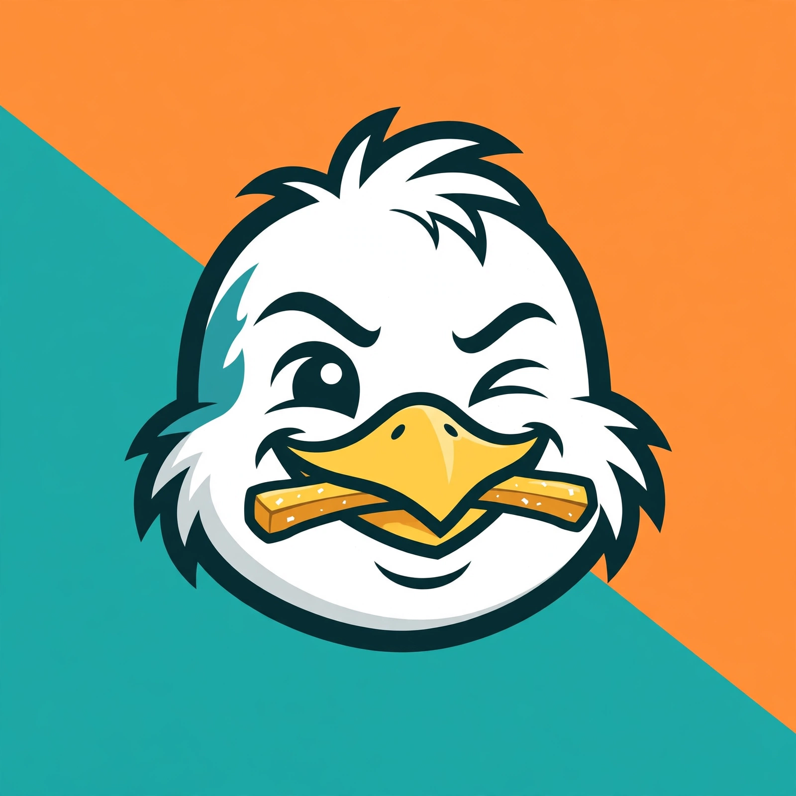

The seagull that steals your fries. He steals fries. He steals SOL.
CA: belum dirilis — alamat kontrak muncul di sini saat launch
● MENUNGGU LAUNCH — data muncul setelah trade pertama
Saat launch, stream live koin ini tayang di halaman pump.fun — layar kerja nyata, panel harga live, dan alamat kontrak di ticker bawah.
Video promo 45 detik ditambahkan di sini setelah selesai dirender.
Leluconnya: seekor camar yang mencuri kentang goreng — dan menjaga kentang terakhirnya dengan nyawanya.
Vibes-nya: neon Miami, nol janji, nol roadmap. Sekadar camar, kentang, dan kalung emas.
Faktanya: memecoin di Solana, dibuat lewat pump.fun, mode Creator Fee. Fee kreator 0,30% dari volume trading — bukan janji harga.
Link Telegram dan bot dibuat saat launch; halaman ini contoh — link diisi setelah grup dan bot dibuat.